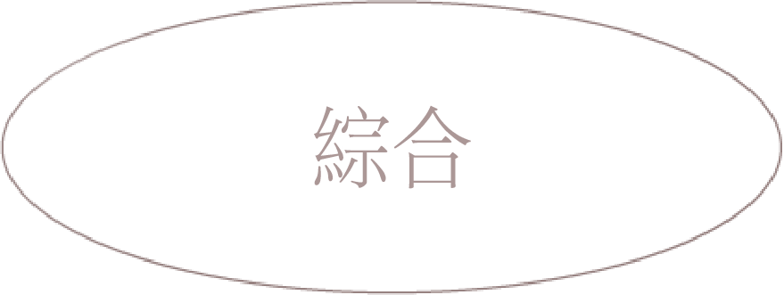

헤겔은 자신의 관념에서 바흐의 음악을 이해하지 못했다. 바흐의 음악을 헤겔의 시선으로 보기 전에 우리는 먼저 헤겔의 변증법에 대해 이야기해 보아야 한다.
우선 변증법이란 이성적 주장을 통해 진리를 확립하고자 하는, 주제에 대해 서로 다른 견해를 가진 두 명 이상의 사람들 사이의 담론(談論) 모순을 통해 진리를 찾는 철학 방법이다.
헤겔은 인간의 사고가 세계정신 자체의 사고라고 주장한다. 일이 이렇게 된다면, 관념론을 벗어나지 않으면서 동시에 ‘주관적인 것’을 극복할 수 있다. 사물들은 한 개인의 주관적인 정신이 아니라, 객관적인 세계정신으로 존재하는 것이 되기 때문이다. 헤겔에 따르면 세계정신은 사물들을 생각함으로써 사물들을 만든다. 그러므로 이 객관적인 세계정신 안에서 사고와 존재와 진리는 일치한다.
1
2
3
헤겔은 우리의 인식 단계를 셋으로 나눈다. 첫째, 직접적인 긍정으로서 정립(定立) 단계와 부정으로서 반정립(反定立) 단계를 거쳐 종합의 단계로 나아간다는 것이다.
두 가지 대립하는 것들을 지양함으로써 더욱 높은 차원의 통일로 발전해 가는데, 이런 과정은 정신이 세계 전체를 구체적으로 인식할 때까지 계속된다. “진리는 전체다. 절대자는 본질적으로 결과이며, 맨 끝에 가서야 비로소 본래의 그것이 된다.”
즉 헤겔은 우리의 정신은 절대정신이 실현되는 순간적인 과정에 불가한 것이라고 생각했으며 나폴레옹을 예로 들어, 나폴레옹을 말을 탄 세계정신(이성의 간지)라고 하며 나폴레옹이 위대한 것이 아니라 나폴레옹에 의해 절대정신이 실현된 것에 불가하다라고 말했다.
바흐는 깊은 신앙심과 소박한 성품을 바탕으로 종교적인 음악을 주로 작곡했는데, 그의 작품은 바로크 시대의 종말과 궁극적인 성숙을 동시에 가져왔다. 바흐의 음악에는 '기도하는 인간'이 들어 있었는데, 기도를 한다고 현실에서의 구원이 일우어지지 않는다는 것을 알면서도 기도밖에 할 수 없는 나약한 인간의 모습이 있었 그는 현실과 이상의 대조적인 모습을 음악에 담으려 했다.
결국 헤겔이 바흐의 음악에 반감을 표한 이유는 바흐가 현실과 무관한, 순수의 영역인 신을 다룬 점이 절대정신을 추구한 자신의 변증법적 생각과 달랐기 때문이다.